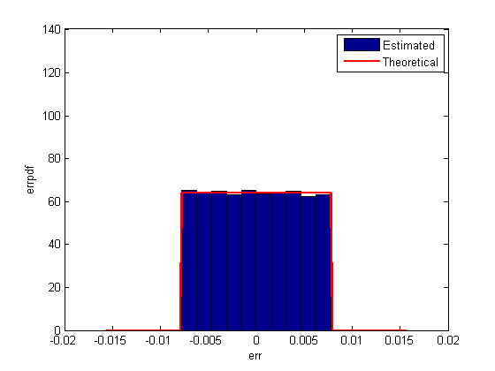
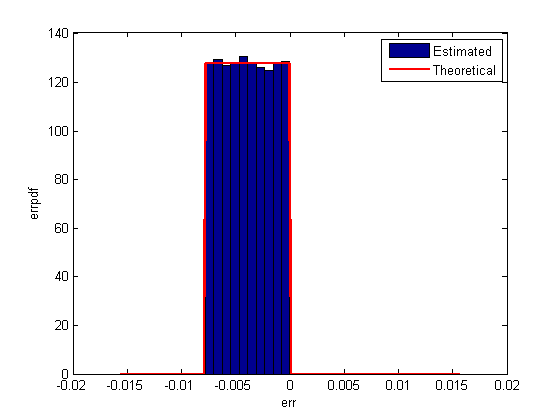
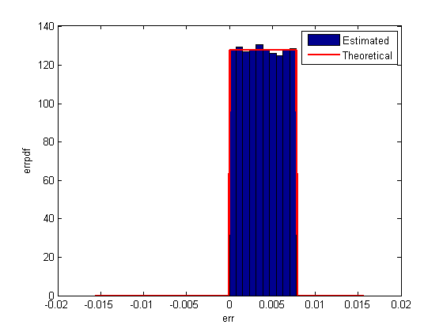
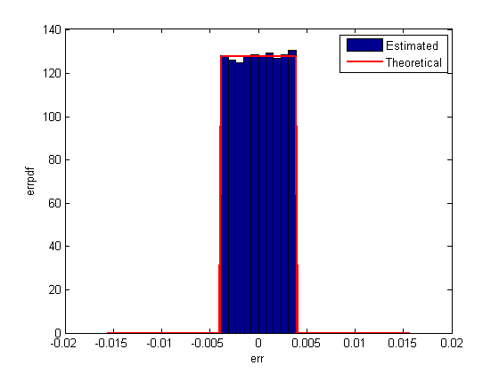

量子化誤差
これは、さまざまな丸め方法を使用して信号が量子化される際の誤差の統計のデモです。
まず、量子化器の範囲に及ぶランダム信号が作成されます。
次に、fix、floor、ceil、nearest、convergent といった丸めモードで信号が量子化されて、信号の統計が推測されます。
量子化誤差の論理的確率密度関数は、ERRPDF を使用して計算されます。量子化誤差の理論的平均値は、ERRMEAN を使用して計算されます。また、量子化誤差の理論的分散は、ERRVAR で計算されます。
目次
一様分布ランダム信号
まず、これから見る固定小数点量子化器の -1 ～ 1 の領域に及ぶ一様分布ランダム信号を作成します。
q = quantizer([8 7]);
r = realmax(q);
u = r*(2*rand(50000,1) - 1); % Uniformly distributed (-1,1)
xi=linspace(-2*eps(q),2*eps(q),256);
Fix:ゼロ方向への丸め
fix 丸めでは、確率密度関数は、他と比べて幅が 2 倍であることに注意してください。このため、分散は他の 4 倍となります。
q = quantizer('fix',[8 7]); err = quantize(q,u) - u; f_t = errpdf(q,xi); mu_t = errmean(q); v_t = errvar(q); % Theoretical variance = eps(q)^2 / 3 % Theoretical mean = 0 qerrordemoplot(q,f_t,xi,mu_t,v_t,err)
Estimated error variance (dB) = -46.9238 Theoretical error variance (dB) = -46.9154 Estimated mean = -4.2966e-005 Theoretical mean = 0
Floor: 負の無限大方向への丸め
ｆloor 丸めは、2 の補数で表される固定小数点数や整数と共に使用される場合は切り捨てと呼ばれます。実装にハードウェアが必要ないため、DSP プロセッサーの丸めモードでは最も一般的です。floor は、ROUND ほどには実際値に近い量子化された値を生成しませんが、同じ分散になります。また、符号が異なる小さな信号を検出します。Round ではそれらは失われるのに対して符号が異なる同じ信号が検出されます。
q = quantizer('floor',[8 7]); err = quantize(q,u) - u; f_t = errpdf(q,xi); mu_t = errmean(q); v_t = errvar(q); % Theoretical variance = eps(q)^2 / 12 % Theoretical mean = -eps(q)/2 qerrordemoplot(q,f_t,xi,mu_t,v_t,err)
Estimated error variance (dB) = -52.9343 Theoretical error variance (dB) = -52.936 Estimated mean = -0.0039177 Theoretical mean = -0.0039063
Ceil:正の無限大方向への丸め
q = quantizer('ceil',[8 7]); err = quantize(q,u) - u; f_t = errpdf(q,xi); mu_t = errmean(q); v_t = errvar(q); % Theoretical variance = eps(q)^2 / 12 % Theoretical mean = eps(q)/2 qerrordemoplot(q,f_t,xi,mu_t,v_t,err)
Estimated error variance (dB) = -52.9343 Theoretical error variance (dB) = -52.936 Estimated mean = 0.0038948 Theoretical mean = 0.0039063
Round:最近傍への丸め。同順位では、最大固有値への丸め
round は floor より正確ですが、eps(q) より小さい値はすべてゼロに丸められ、失われます。
q = quantizer('nearest',[8 7]); err = quantize(q,u) - u; f_t = errpdf(q,xi); mu_t = errmean(q); v_t = errvar(q); % Theoretical variance = eps(q)^2 / 12 % Theoretical mean = 0 qerrordemoplot(q,f_t,xi,mu_t,v_t,err)
Estimated error variance (dB) = -52.9231 Theoretical error variance (dB) = -52.936 Estimated mean = 1.2659e-005 Theoretical mean = 0
Convergent:最近傍への丸め。同順位では、偶数への丸め
convergent 丸めは、同順位を常に同じ方向へ丸める通常の「丸め」によって生じる偏りを除去します。
q = quantizer('convergent',[8 7]); err = quantize(q,u) - u; f_t = errpdf(q,xi); mu_t = errmean(q); v_t = errvar(q); % Theoretical variance = eps(q)^2 / 12 % Theoretical mean = 0 qerrordemoplot(q,f_t,xi,mu_t,v_t,err)
Estimated error variance (dB) = -52.9231 Theoretical error variance (dB) = -52.936 Estimated mean = 1.2659e-005 Theoretical mean = 0
Nearest と Convergent の比較
収束する方向への丸め誤差確率密度関数を最近似値に丸めるためのものと区別するのは、プロットを見ただけでは困難です。
収束する方向への丸め誤差 p.d.f. は、
f(err) = 1/eps(q), for -eps(q)/2 <= err <= eps(q)/2, and 0 otherwise
最近傍への丸め誤差 p.d.f. は、
f(err) = 1/eps(q), for -eps(q)/2 < err <= eps(q)/2, and 0 otherwise
最近傍に丸めは正の方向へわずかに偏りがあるのに対し、収束する方向への丸め誤差 p.d.f. は対称的です。
唯一の違いは、同順位における丸めの方向です。
x=[-3.5:3.5]'; [x convergent(x) nearest(x)]
ans =
-3.5000 -4.0000 -3.0000
-2.5000 -2.0000 -2.0000
-1.5000 -2.0000 -1.0000
-0.5000 0 0
0.5000 0 1.0000
1.5000 2.0000 2.0000
2.5000 2.0000 3.0000
3.5000 4.0000 4.0000
プロット補助関数
このデモでプロットを生成するのに使用された補助関数は、以下にリストされています。
type qerrordemoplot.m
function qerrordemoplot(q,f_t,xi,mu_t,v_t,err)
%QERRORDEMOPLOT Plot function for QERRORDEMO.
% QERRORDEMOPLOT(Q,F_T,XI,MU_T,V_T,ERR) produces the plot and display used by
% the demo function QERRORDEMO, where Q is the quantizer whos attributes are
% being analyzed; F_T is the theoretical quantization error probability
% density function for quantizer Q computed by ERRPDF; XI is the domain of
% values being evaluated by ERRPDF; MU_T is the theoretical quantization
% error mean of quantizer Q computed by ERRMEAN; V_T is the theoretical
% quantization error variance of quantizer Q computed by ERRVAR; and ERR
% is the error generated by quantizing a random signal by quantizer Q.
%
% See QERRORDEMO for examples of use.
% Author:Thomas A. Bryan
% Copyright 1999-2005 The MathWorks, Inc.
% $Revision: 1.1.4.2.2.1 $
v=10*log10(var(err));
disp(['Estimated error variance (dB) = ',num2str(v)]);
disp(['Theoretical error variance (dB) = ',num2str(10*log10(v_t))]);
disp(['Estimated mean = ',num2str(mean(err))]);
disp(['Theoretical mean = ',num2str(mu_t)]);
[n,c]=hist(err);
figure(gcf)
bar(c,n/(length(err)*(c(2)-c(1))),'hist');
line(xi,f_t,'linewidth',2,'color','r');
% Set the ylim uniformly on all plots
set(gca,'ylim',[0 max(errpdf(quantizer(q.format,'nearest'),xi)*1.1)])
legend('Estimated','Theoretical')
xlabel('err'); ylabel('errpdf')